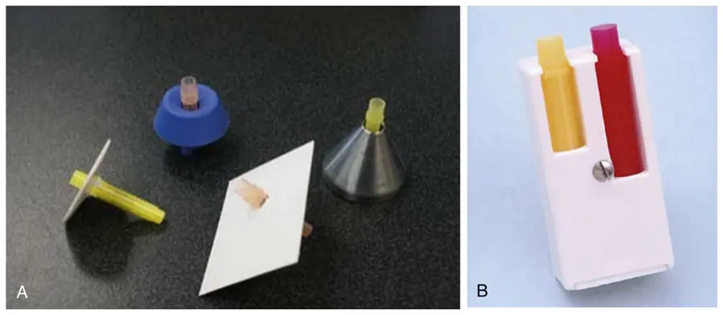

نسخه استخراجشده؛ ترجمه یا تأیید علمی انجام نشده است. وضعیت: captured
هنگام بلاک عصب آلوئولار تحتانی (IANB) برای نوجوانی مضطرب، با انگشت اشارهی دست دیگر گونه را کنار کشیدهای. بیمار ناگهان سرش را میچرخاند و نوک سوزن در انگشتت فرو میرود. چه چیزی خطر را بالا برده بود؟
فرورفتن سوزن در دست کادر درمان بیشتر در دو لحظه رخ میدهد:
در پزشکی قاعده این است: سوزن را دوباره درپوش نگذار و بیدرنگ دور بینداز. در دندانپزشکی یک سوزن برای چند تزریق همان بیمار به کار میرود و این قاعده اغلب عملی نیست؛ پس باید ایمن درپوش گذاشت.

قواعد سوزن: فقط برای یک بیمار؛ تعویض پس از ۳ یا ۴ ورود؛ پس از مصرف در ظرف اجسام تیز. اگر سوزن آلوده در دستت رفت، محل را با آب و صابون بشوی و بیدرنگ گزارش کن تا ارزیابی پس از تماس انجام شود.
اشتباه رایج: گرفتن درپوش با دست دیگر و آوردنش به سمت سوزن. همین حرکت است که سوزن آلوده را به انگشت میرساند.